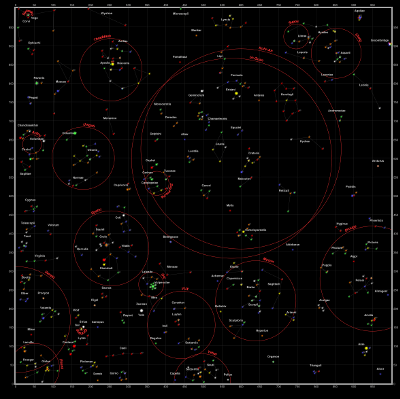
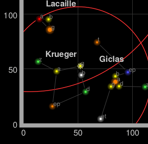

Not of This Earth
Sometimes, maps do not represent things on the surface of the earth and, as such, do not have a concept of geographical latitude and geographical longitude. Most times this refers to big scanned images, such as game maps.
For this tutorial we’ve picked a starmap from Star Control II, a game that is now available as the open-source project The Ur-Quan Masters. These maps were made with a tool to read the open-source data files of the game (webpage seems to have been taken down, see the archived version), and look like this:

The game has a built-in square coordinate system, as can be seen in the corners. This will allow us to establish a coordinate system.

SimpleCRS
CRS stands for coordinate reference system, a term used by geographers to explain what the coordinates mean in a coordinate vector. For example, [15, 60] represents a point in the Indian Ocean if using latitude-longitude on the earth, or the solar system Krueger-Z in our starmap.
A Maplair map has one CRS (and one CRS only), that can be changed when creating the map. For our game map we’ll use SimpleCRS, which represents a square grid:
const map = new MaplairMap('map', {
crs: SimpleCRS
});
Then we can just add an ImageOverlay with the starmap image and its approximate bounds:
const bounds = [[0,0], [1000,1000]];
const image = new ImageOverlay('uqm_map_full.png', bounds).addTo(map);
And show the whole map:
map.fitBounds(bounds);
| See this example stand-alone. |
This example doesn’t quite work, as we cannot see the whole map after doing a fitBounds().
Common Gotchas in SimpleCRS Maps
In the default Maplair CRS, EarthCRS, 360 degrees of longitude are mapped to 256 horizontal pixels (at zoom level 0) and approximately 170 degrees of latitude are mapped to 256 vertical pixels (at zoom level 0).
In a SimpleCRS, one horizontal map unit is mapped to one horizontal pixel, and idem with vertical. This means that the whole map is about 1000x1000 pixels big and won’t fit in our HTML container. Luckily, we can set minZoom to values lower than zero:
const map = new MaplairMap('map', {
crs: SimpleCRS,
minZoom: -5
});
Pixels vs. Map Units
One common mistake when using SimpleCRS is assuming that the map units equal image pixels. In this case, the map covers 1000x1000 units, but the image is 2315x2315 pixels big. Different cases will call for one pixel = one map unit, or 64 pixels = one map unit, or anything. Think in map units in a grid, and then add your layers (ImageOverlays, Markers and so on) accordingly.
In fact, the image we’re using covers more than 1000 map units - there is a sizable margin. Measuring how many pixels there are between the 0 and 1000 coordinates, and extrapolating, we can have the right coordinate bounds for this image:
const bounds = [[-26.5,-25], [1021.5,1023]];
const image = new ImageOverlay('uqm_map_full.png', bounds).addTo(map);
While we’re at it, let’s add some markers:
const sol = new LatLng([ 145, 175.2 ]);
new Marker(sol).addTo(map);
map.setView( [70, 120], 1);
| See this example stand-alone. |
This is not the LatLng You’re Looking for
You’ll notice that Sol is at coordinates [145,175] instead of [175,145], and the same happens with the map center. Coordinates in SimpleCRS take the form of [y, x] instead of [x, y], in the same way Maplair uses [lat, lng] instead of [lng, lat].
(In technical terms, Maplair prefers to use [northing, easting] over [easting, northing] - the first coordinate in a coordinate pair points “north” and the second points “east”)
The debate about whether [lng, lat] or [lat, lng] or [y, x] or [x, y] is not new, and there is no clear consensus. This lack of consensus is why Maplair has a class named LatLng instead of the more confusion-prone Coordinate.
If working with [y, x] coordinates with something named LatLng doesn’t make much sense to you, you can easily create wrappers for them:
const yx = LatLng;
const xy = function(x, y) {
if (Array.isArray(x)) { // When doing xy([x, y]);
return new yx(x[1], x[0]);
}
return new yx(y, x); // When doing xy(x, y);
};
Now we can add a few stars and even a navigation line with [x, y] coordinates:
const sol = xy(175.2, 145.0);
const mizar = xy( 41.6, 130.1);
const kruegerZ = xy( 13.4, 56.5);
const deneb = xy(218.7, 8.3);
new Marker( sol).addTo(map).bindPopup( 'Sol');
new Marker( mizar).addTo(map).bindPopup( 'Mizar');
new Marker(kruegerZ).addTo(map).bindPopup('Krueger-Z');
new Marker( deneb).addTo(map).bindPopup( 'Deneb');
const travel = new Polyline([sol, deneb]).addTo(map);
The map looks pretty much the same, but the code is a bit more readable:
| See this example stand-alone. |